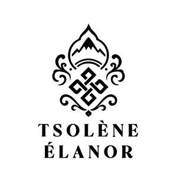

Trade Mark Journal No.2026/009 27 February 2026
UK00004206722 21 May 2025 (11,14,24,25,27)

- Class 11
- Light bulbs; arc lamps; electric lamps; lamps; lanterns for lighting; incandescent burners; electric flashlights; electric torches; lighting apparatus and installations; chandeliers; globes for lamps; lamp globes; Chinese lanterns; searchlights; lampshades; lampshade holders; fairy lights for festive decoration; standard lamps; floor lamps; smart light bulbs.
- Class 14
- Bracelets [jewellery]; bracelets [jewelry]; brooches [jewellery]; brooches [jewelry]; necklaces [jewellery]; necklaces [jewelry]; jewellery; jewelry; ornamental pins; rings [jewellery]; rings [jewelry]; hat jewellery; hat jewelry; earrings; jewellery boxes; jewelry boxes; jewellery rolls; jewelry rolls; charms for key chains; lanyards for keys.
- Class 24
- Upholstery fabrics; brocades; textile material; hemp cloth; velvet; cotton fabrics; damask; jersey [fabric]; linen cloth; table linen, not of paper; household linen; handkerchiefs of textile; pillowcases; knitted fabric; tablemats of textile; tapestry [wall hangings], of textile; wall hangings of textile; pillow shams; place mats of textile; bed blankets.
- Class 25
- Footwear; stockings; caps being headwear; hosiery; shawls; socks; inner soles; neckties; footwear uppers; gloves [clothing]; scarfs; scarves; knitwear [clothing]; slippers; sandals; veils [clothing]; mantillas; sleep masks; headscarves; headscarfs.
- Class 27
- Bath mats; floor coverings; artificial turf; gymnasium mats; gymnastic mats; mats; wallpaper; door mats; reed mats; carpets; rugs; non-slip mats; wall hangings, not of textile; carpet underlay; mats of woven rope for ski slopes; textile wallpaper; floor mats, fire-resistant, for fireplaces and barbecues; yoga mats; tatami mats; textile wallcoverings.
Shanghai Yingcan International Trade Co., Ltd.
Representative: Pawel Wowra